Research: People
Current Lab Members
Charlie Martinez
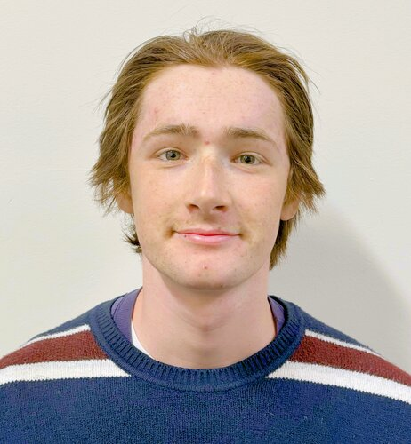
Charlie is a physics student at Gonzaga. Along with his studies,
he enjoys running and cooking. Charlie is experimenting with the
Krishnan model to determine how deep sleep affects plasticity and
memory recall, similar to studies by Yina Wei et al. in 2018 and 2020.
Former Lab Members
Kira Cowell
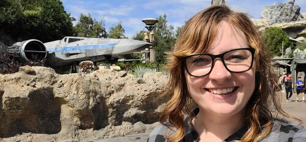
Kira is currently a mechanical engineering major at Gonzaga. She is a mother of one and a former professional baker.
She worked with Charlotte Smith to incorporate the effects of plasticity
and various neuromodulators in the computational sleep model of Krishnan et. al. (eLife, 2016).
Charlotte Smith
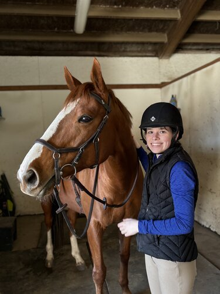
Charlotte was a physics and philosophy double major at Gonzaga, graduating in 2025.
She worked with Kira Cowell to incorporate the effects of plasticity
and various neuromodulators in the computational sleep model of Krishnan et. al. (eLife, 2016).
Sydney Zinnecker
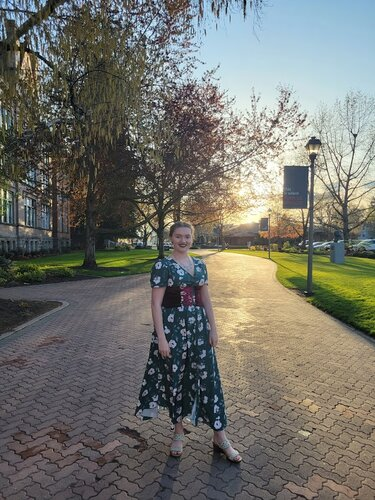
Sydney graduated with her physics degree from Gonzaga in 2024. She worked with Nathan Omodt during the summer of
2022 to develop an algorithm to better identify influential nodes in weighted, directed networks. This research was
later published in Physica A
and Data in Brief.
Nathan Omodt
Nathan graduated with a mechanical engineering degree from Gonzaga University in 2024. During the summer of 2022, Nathan worked with Sydney
Zinnecker on the project described above. After graduating, he was hired by Sedron Technologies in Bellingham, WA.
Logan Bayer
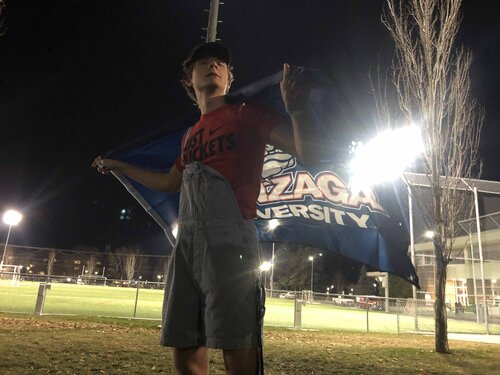
Logan graduated with a physics major/math minor from Gonzaga University in 2022.
Over the course of the 2019 summer, Logan worked with Lyssa Blood to complete a
replication of the computational model of sleep proposed by Krishnan et. al. (2016). Also, Logan and Lyssa started searching
for epileptic high-frequency oscillations in the computational model of the sleeping brain.
Logan continued this work in the summer of 2020, successfully translating the sleep model from NEURON to NetPyNE.
He is now a graduate student in the physics program at Georgetown University. His contributions to the sleep model
were published in Software Impacts in 2024.
Kyle Butler
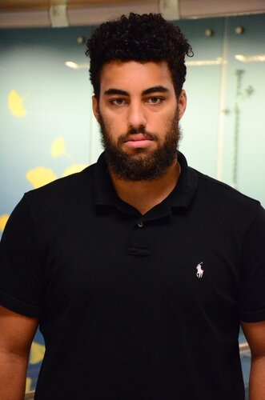
Kyle Butler was a physics major at Gonzaga who worked with Logan Bayer during the summer of 2020
to translate a computational model of sleep from NEURON to NetPyNE. He graduated with Master's of
Biotechnology from Georgetown University, then worked as a research assistant in the Cancer Biology
department at MD Anderson in Houston, Texas. He is currently a lab specialist at the University of Virginia,
focusing on biosensor development.
Lyssa Blood
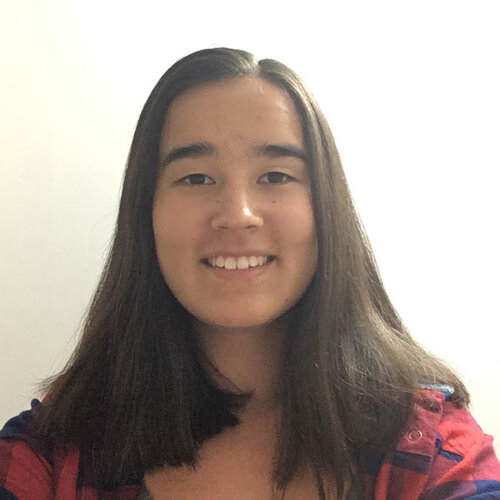
Lyssa was an electrical engineering major at Gonzaga University. Over the summer of 2019,
Lyssa worked with Logan to develop the computational model of sleep described above.
She now works for Schweitzer Engineering Laboratories.
Guillo Gutierrez
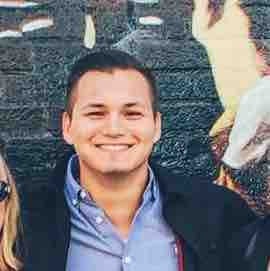
Guillo was a physics/political science double major at Ohio Wesleyan. For his senior research project he
worked to develop algorithms to identify influential spreaders
in complex networks (continuing the work started by Kelly Fullin). This work is useful in determining which people
should be vaccinated to prevent the spread of a disease, or in quantifying individuals' ability to spread their
ideas within a social network. Guillo is now pursuing a master's degree in Operations Research while working as a Senior
Data Analyst in the D.C. area.
Joe Emerson
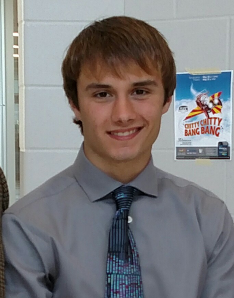
Joe was a physics/computational neuroscience double major at Ohio Wesleyan. For his senior research project, Joe
continued the project on seizure propagation that he started with Momi Afelin (described below). This work was eventually
published in the Journal of Nonlinear Science.
Joe is currently enrolled in the University of Minnesota's
graduate program in neuroscience.
Momi Afelin
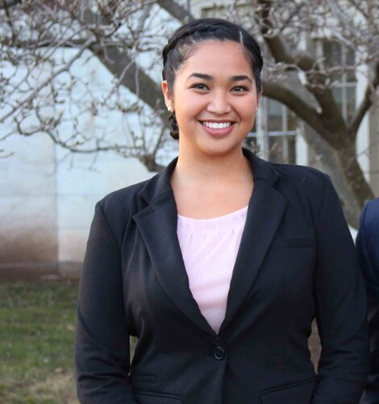
Momi was a double major in Neuroscience and Behavior & Biology at Wesleyan University. As part of OWU's
neuroscience REU program, she worked with a theoretical model of seizure generation
to explore how meso-scale connectivity structure affects the propagation
of epileptic seizures. The goal was to identify principles to determine which
specific connections should be severed in order to prevent seizures from spreading,
thus improving surgical outcomes for patients with epilepsy. This work was eventually
published in the Journal of Nonlinear Science.
Upon graduating, Momi was selected as a
Watson Fellow and studied social entrepreneurship in five island countries in the Pacific and Caribbean. Following that, she worked on a team to improve
EEG electrode clip design for people with coarse and curly hair, leading improved EEG accuracy in the Black population. She is currently enrolled in
the Master's of Public Health program at Harvard University.
Kelly Fullin
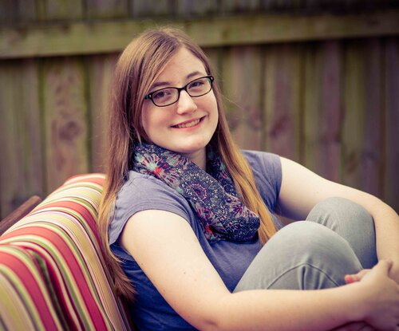
Kelly is a computer science major/physics minor from Ashland University who participated
in OWU's physics REU program in the summer of 2017. She worked on a project to identify influential spreaders
in complex networks, and developed an algorithm that quantified the influence of particular nodes roughly ten times faster
than brute force simulations.
V Sliupas
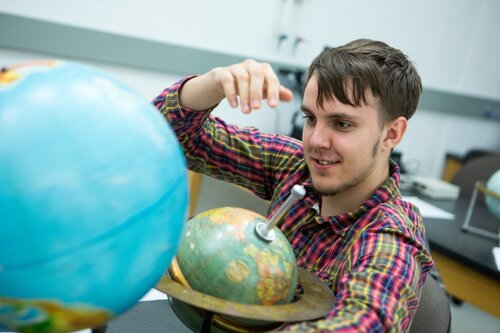
For their senior research project, V started the project on seizure propagation that Momi and Joe took over. V graduated from
Ohio Wesleyan in 2017 and now works for Collaborative Drug Discovery.
Eugene Lim
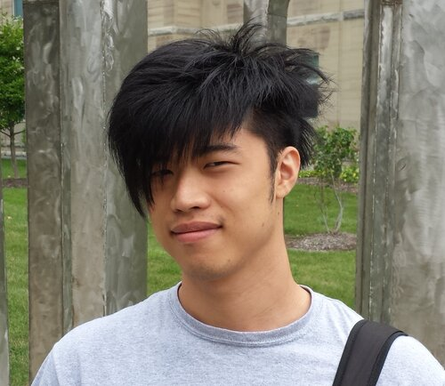
Eugene worked with Kate Holman in the summer of 2015, as well as throughout his senior year, to theoretically
demonstrate the possibility of brain rhythms emerging from completely asynchronous neural activity. This work
was accepted for publication in
The International Journal of Neural Systems.
Kate Holman
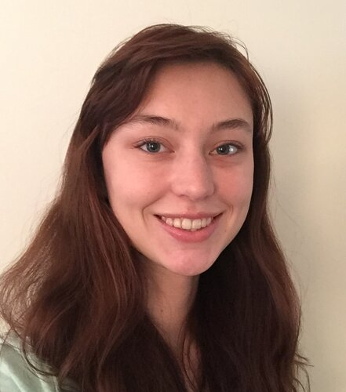
ate worked with Eugene Lim over the summer of 2015 on the project described above. Kate ran simulations to
pinpoint exactly how noisy asynchronous neural activity can be before narrowband rain rhythms may no longer be observed.
Kate is a co-author on the paper published
in The International Journal of Neural Systems, and she is
currently finishing her senior year at Towson University.
Jason Kim
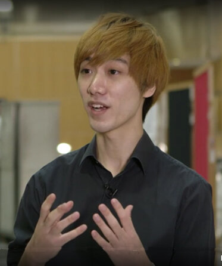
Jason worked to design a brain-computer interface during for his senior research project.
Click here to see a short demo
of the final product. Jason graduated from Ohio Wesleyan in 2015 and completed a master's
degree in electrical engineering at Washington University, where he continued to conduct research with brain-computer interfaces.
Brandon Schurter
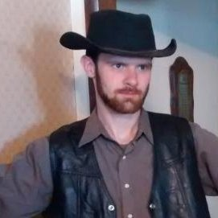
Brandon worked in the lab during the summer of 2014 as part of the OWU physics REU program. Brandon continued Mike Leone's project
from the previous summer, investigating how the synchronization of neuronal networks is affected by having different mixtures
of different kinds of neurons (while keeping network connectivity the same). This work was ultimately
published in Physical Review E.
Brandon graduated from Berea College in 2015, then took a job as a software engineer with Simmetry Solutions, where he currently works.
Kevin Rossi
During the Fall 2014 semester, Kevin wrote a program in MATLAB to analyze fruit fly sleep behavior. Kevin graduated from
Ohio Wesleyan in 2017.
Alex Cook
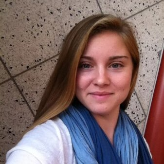
In the summer of 2013 Alex wrote a program in MATLAB to analyze fluoresence traces recorded from neuronal cultures, helping
to automate the identification of neural events.
Alex graduated from OWU in 2016, then earned a master's in chemical engineering from Columbia University. She
worked as a Senior Research Engineer at Celgene, and is now currently enrolled in dental school in Pennsylvania.
Mike Leone
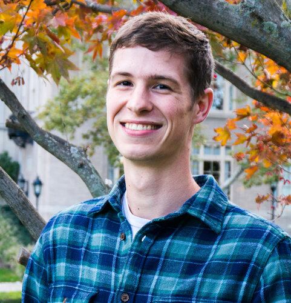
Mike worked in the lab during the summer of 2013 as part of the OWU physics department's REU program. He started the
project that Brandon Schurter completed (described above), resulting in a publication in
Physical Review E.
After his undergraduate studies, Mike studied Computational Neuroscience at Carnegie Mellon University, and is
now enrolled in an MD/PhD program at the University of Pittsburgh.